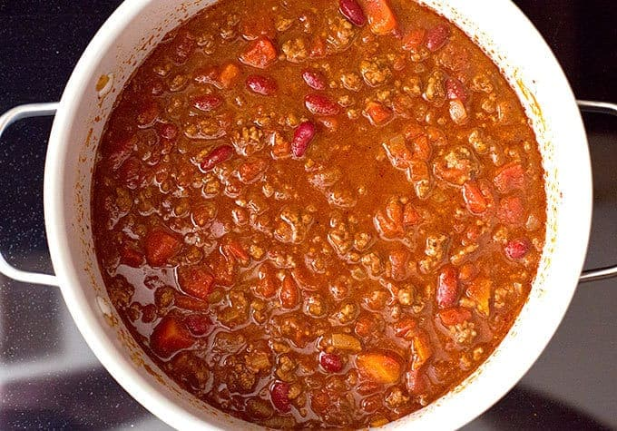

Chili

Tips
You can have many toppings to the chili.
Some toppings include shredded cheddar cheese, sour cream, and crackers.
Ingredients
- 1 tablespoon olive oil
- 1 medium yellow onion-diced
- 1 pound 90% lean ground beef
- 2 1/2 tablespoons chili powder
- 2 tablespoons ground cumin
- 2 tablespoons granulated sugar
- 2 tablespoons tomato paste
- 1 tablespoon garlic powder
- 1 1/2 teaspoons salt
- 1/2 teaspoon ground black pepper
- 1/4 teaspoon ground cayenne pepper* -optional
- 1 1/2 cups beef broth
- 1 (15 oz.) can petite diced tomatoes
- 1 (16 oz.) can red kidney beans, drained and rinsed
- 1 (8 oz.) can tomato sauce